¿Quien es Sobek
Sobek era reconocido como el dios del Nilo, protector
de las cosechas y faraones, patron militar, un dios de la fertilidad y potencia creadora.
Uno de los apodos con el que mas se le asociaba era "El señor de las Aguas".
Representacion de Sobek
Sobek es comunmente representado como un hombre con cabeza de cocodrilo o como un cocodrilo. Reflejando
tanto la ferocidad como la benevolencia, simbolizando el poder y la proteccion que brinda a las aguas del Nilo
y a la comunidad que depende de ellas.
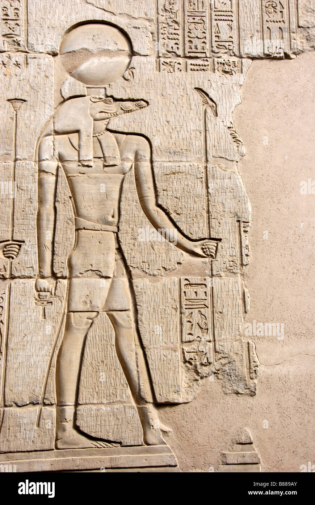
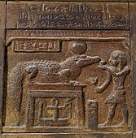
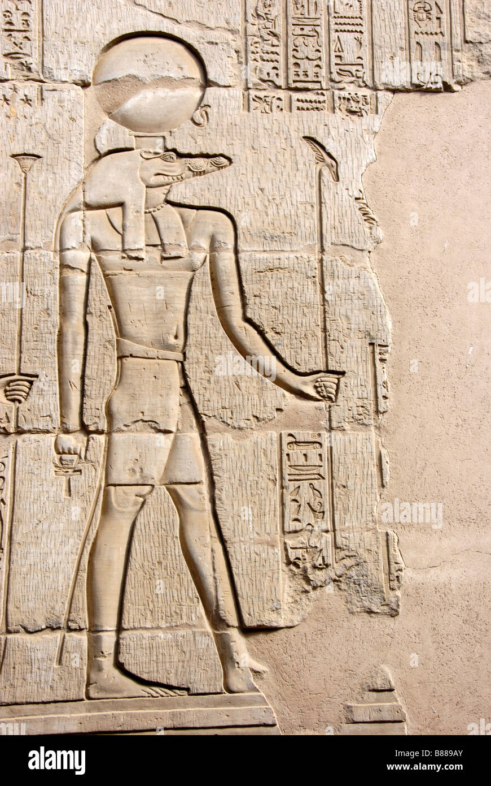
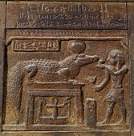
Atributos de Sobek
Se le atribuyen diversos aspectos, como la fuerza del cocodrilo en la caza, la fertilidad que trae consigo
el desbordamiento del Nilo y la sabiduria asociada con su mirada penetrante. Sobek es visto como un dios
benevolente, pero también capaz de mostrar su poder si es necesario.
Como un dios protector, era especialmente rezado por los faraones con el fin de que la deidad le brindara su proteccion.
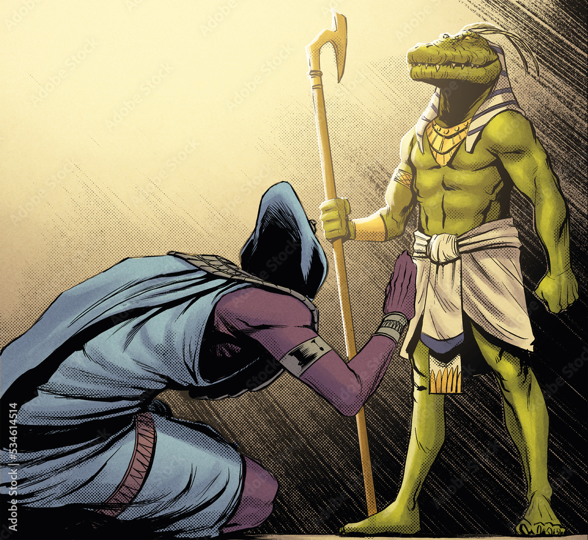
Culto de Sobek
Uno de los cultos mas fuertes de Sobek era en la ciudad Kom-Ombo, en el que cuidaban y criaban a cocodrilos, poniendoles joyas al considerarlos
una encarnacion de Sobek.
Cuando uno de esos cocodrilos fallecia, era momificado y enterrado con los faraones, considerandose las momias
de cocodrilos un simbolo de proteccion para las almas.
 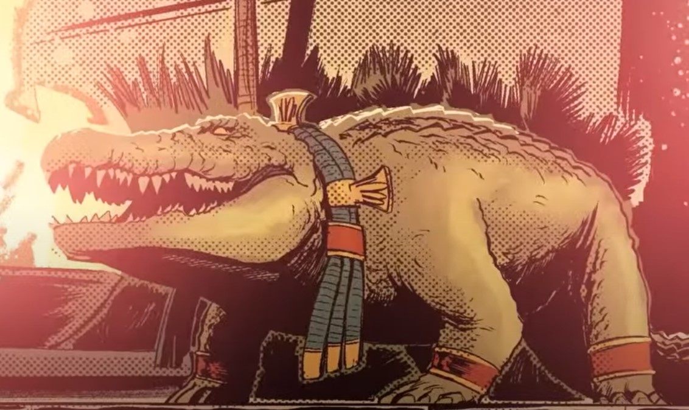
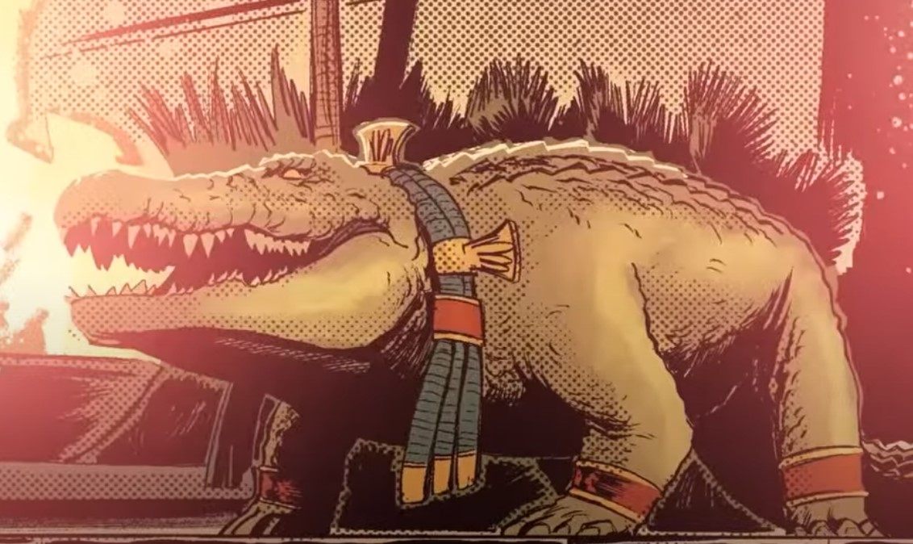
Creacion del rio Nilo
Uno de los motivos por los cuales era conocido Sobek, como el señor de las Aguas era por la creacion del nilo.
Se menciona que Sobek creo que el Rio Nilo a partir del sudor de su frente y espalda.
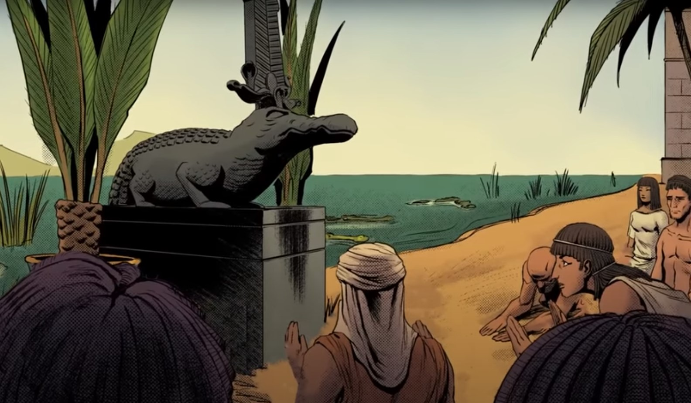
Apoyo de Sobek hacia los dioses
Sobek al ser una deidad benevolente y bondadosa genero una buena relacion con los demas dioses,
ya que ayudo a Isis en la busqueda de los pedazos de Osiris, protegiendo una de las partes para que se mantenga intacta.
Otras representaciones de Sobek lo enlazan como el protector de Ra durante sus viajes al inframundo en su barco solar,
y otra ayuda que aporto a los dioses, fue el rescate de los hijos de Horus el menor.
Como un dios protector, era especialmente rezado por los faraones con el fin de que la deidad le brindara su proteccion.
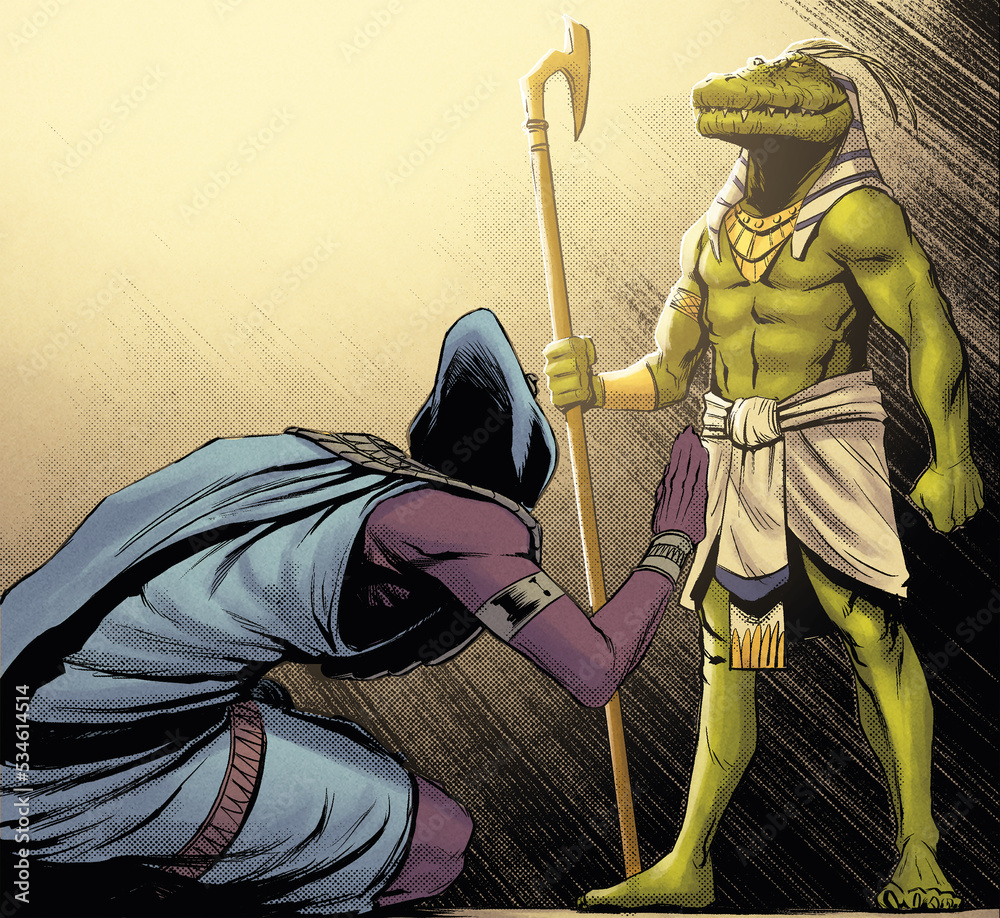
Uno de los cultos mas fuertes de Sobek era en la ciudad Kom-Ombo, en el que cuidaban y criaban a cocodrilos, poniendoles joyas al considerarlos
una encarnacion de Sobek.
Cuando uno de esos cocodrilos fallecia, era momificado y enterrado con los faraones, considerandose las momias
de cocodrilos un simbolo de proteccion para las almas.
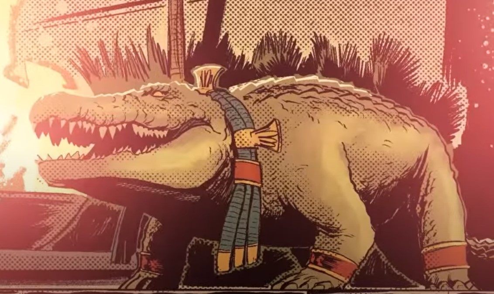
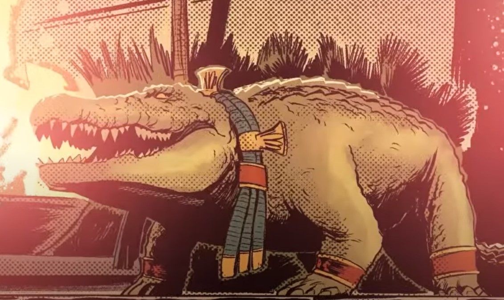